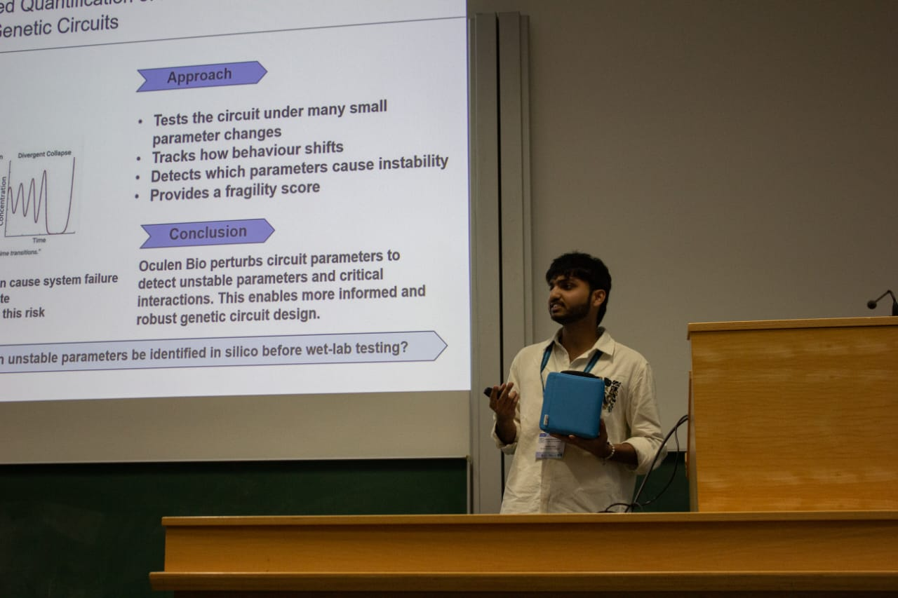
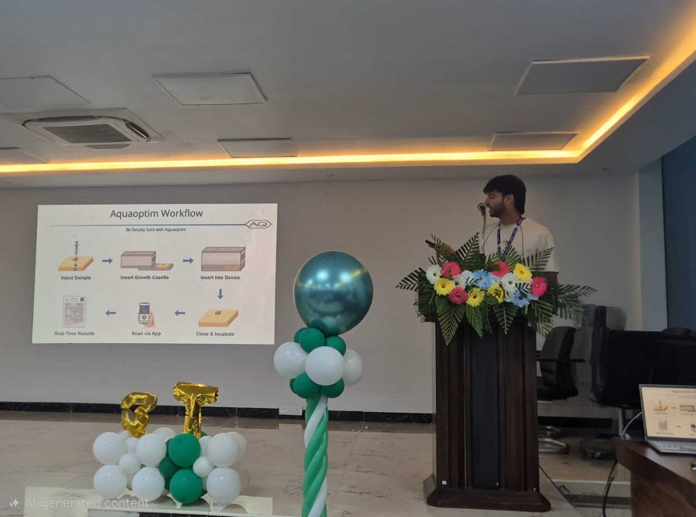

NIBB
JAPAN
2026
JAPAN
2026
Photosynthetic systems
State transitions
Light harvesting
Modeling how biological systems respond to changing physical states.
Academic Research Experience Program
Fully funded · Prof. Jun Minagawa
I model biological systems to understand how they behave, and engineer them to do more.
ScrollI study biological systems as complex systems: modeling them, simulating them, understanding their behavior, and ultimately engineering them.
From molecule to system
Biological systems are nested.
I work across those layers.
Photosynthetic systems
State transitions
Light harvesting
Modeling how biological systems respond to changing physical states.
Academic Research Experience Program
Fully funded · Prof. Jun Minagawa
A computational systems-biology platform for analyzing the fragility and robustness of biological circuits.
Move across the circuit to weaken its repression
SBML · Antimony · Monte Carlo · Latin Hypercube Sampling
oculen.bio
Each project sits on the same question: how does a biological system behave, and what happens when it is pushed?

Münster, Germany
Poster
Modeling & Systems Biology
Flash talk
€1000 travel grant · Max Buchner Foundation

Chennai, India
AquaOptim
Portable microbial-quality testing
Best Oral Presentation
Who
Undergraduate researcher, Central University of Rajasthan.
What
Synthetic biology, computational modeling, photosynthetic systems, bioprocess engineering, biological sensing, and resilience.
Why
Understanding complex biological systems through computation, modeling and engineering.
Biology, mathematics, computation and engineering meet in the same place for me: systems that have to keep working while everything around them changes. I came to it self-taught, and followed that one thread.